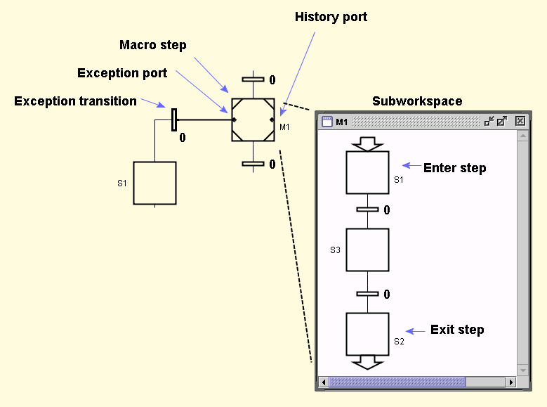

Language Reference - FC - Macro Step
A macro step is a hierarchical step containing a subworkspace.
A macro step may have one or several input ports
and one or several output ports. Each enter step in the
subworkspace is associated with an input port and each exit step with an output
port. It is the x-position that decides which enter/exit step
that is associated with which input/output, i.e. the leftmost
enter step is associated with the leftmost input port. When the number of enter or
exit steps is changed, you need to trigger an update of the ports manually with
Update Stubs in the context menu.
Note: Enter steps and exit steps are not available in the palette but can be created with copy-paste.

When a macro step is activated through an input port the corresponding enter step is activated.
When an exit step is activated the transition connected to the corresponding output port is enabled.
The macro step also has an Exception Port on its left-hand
side to which an Exception Transition can be connected. Unlike
the ordinary transition, the exception transition is enabled all the time while
the macro step is active. Exception transitions have priority over ordinary
transitions in the case that both are fireable. If an exception transition fires,
the execution state of the macro step is saved.
On the right-hand side of the macro step, there is a history port.
If the macro step is activated through this port, execution is resumed from the
saved state.
A macro step may have a name and actions in the same way as ordinary
steps. The stored actions of the macro step are executed before
the stored actions of the enter step. The exit actions
of the macro step are executed after the execution of the exit
actions of the exit step. The periodic actions of the macro step are
executed while the macro step is active, independently of which internal
step that is active. The abort actions of the macro step are executed
when the macro step has been aborted due to the firing of an exception
transition. The abort actions of the macro step are executed after the
abort actions of the internal steps of the macro steps.
Text Methods
Common Methods
Workspace Methods
Context Menu
-
Show/Hide Body
Toggle the visibility of the subworkspace.
-
Table
Opens an Inspector
for the subworkspace.
-
Edit
Opens the step's actions and settings editor.

Macro Step Actions:
Edit the step's actions.
Resume Mode:
Determines when to perform a resume.
- Default: Recursive resume when activated through the history port only.
- Always: Recursive resume when activated either through the history port or by a Step Fusion Set.
- Never: Never resume, always activate the enter step. Useful to break resume recursion locally.
-
Set Name
Open a dialog to set the macro step's name.
-
Update Stubs
Updates the number of input and output ports according to the
number of enter and exit steps in the subworkspace.